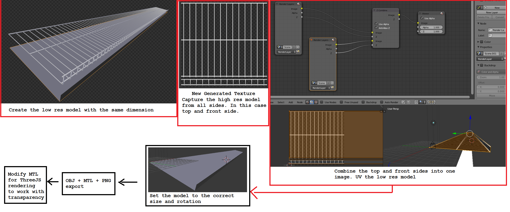
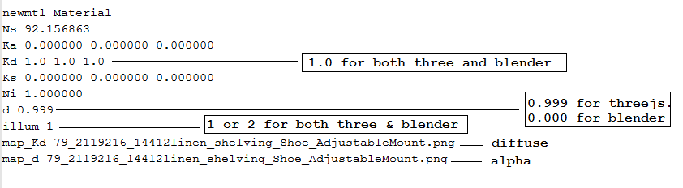
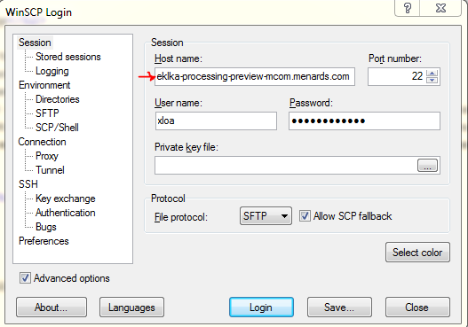

Shelving
One of the newest web apps developed by a third party company. We will soon have to maintain it once the app is complete.
Highlights
- Link: staging
- Link: stage-internalStoreQA
- Link: stage-internalStoreQA (better stage link)
Low Res Creation
Overview process of converting a hi-res model to a lower res
Materials
Not all obj have a image jpeg or png texture file. Objs that are solid throughout, will usually not have a image texture and instead, utilize the obj diffuse RBG to get its color. High poly count objects like baskets will utilize a transparent texture image to fake the details. Every object however should have a obj and mtl at bare minimum for shelving to work with.
Transparency MTL for ThreeJS webGL
d 0.9999 - has to be this for threejs, don't do 1.0(no transprancy) or 0.0(100% transparency) although any value other than 0 will be opaque in blender, but is fine, just enable transparency when bringing it into blender.
Kd 1.0 1.0 1.0 - you want for blender & threejs, (0 makes color very black in threejs, and opaque in blender) The close the value is to zero, the darker material gets in threejs.
Ni - dont matter, can be 1 or 0
illum 1 - should not be 3 or 4 for both blender and threejs(get black transparency) 
After long testing, these are the final settings that matter for threeJS and should be this way for all transparency

Accessing the data server
Use WinSCP
| Preview read only |  |
Path to Media/Obj
Once you login using winscp, the path to the vendors is /var/www/nas-eklka/prev/items/media
To access the vendor product, append the vendor name. this folder has all the vendors for all apps. So you want to narrow your search by going to specific vendors and then under Visualization
/var/www/nas-eklka/prev/items/media/RUBBE002/Visualization
Running the App
Testing Shelving Locally
- Make sure pointing to menards.net
- Make sure data is not null, hard code the path
- Make sure the canvas is bigger than the shelf we are adding
- Transparency should work and alpha channel should work without moding the data.
- One png file can act as the kd and d for transparency and carry any color. You don't need two files.
- For double side to work, must turn on double on material in the child traverse